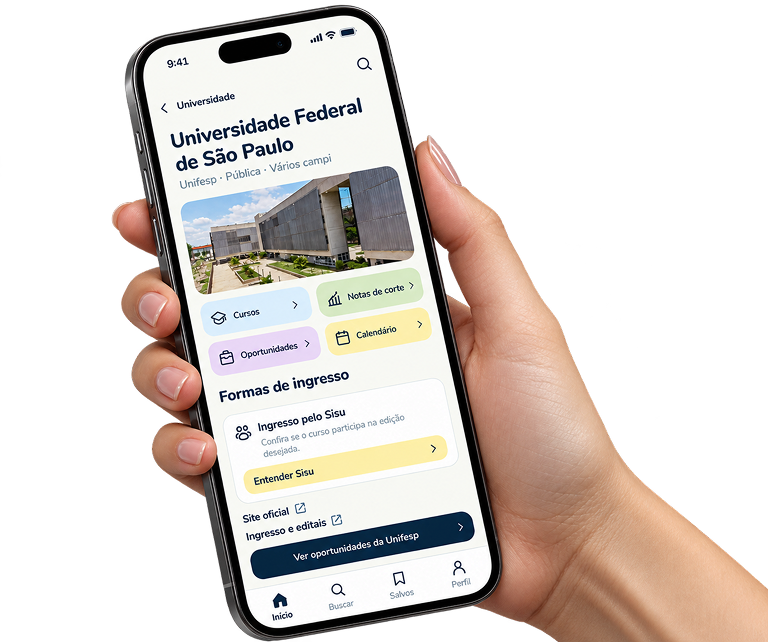
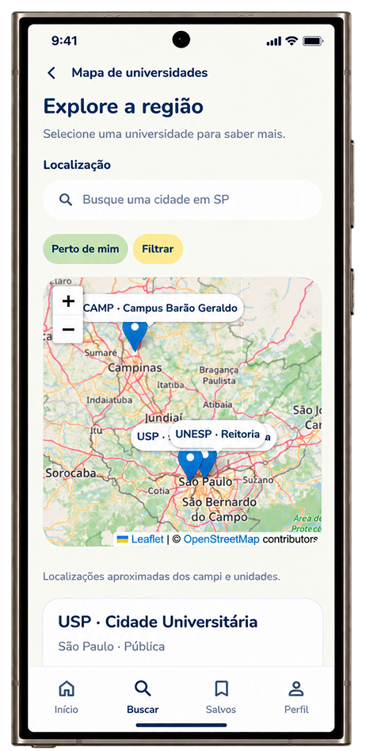

Seu futuro tem
um lugar para
começar.
Descubra universidades públicas, explore cursos e encontre caminhos possíveis para transformar seus planos em realidade.

Escolher o próximo passo não
precisa ser um caminho solitário.
O Tô Dentro! aproxima estudantes das oportunidades do ensino superior público, reunindo informações e recursos para apoiar escolhas mais conscientes.

Explore possibilidades,
descubra novos
caminhos.
Conheça universidades públicas, visualize suas localizações e encontre oportunidades que aproximam você do ensino superior.
Da dúvida à descoberta.
Tudo para explorar seu caminho.
Explore universidades públicas, conheça diferentes cursos e descubra oportunidades que podem transformar seu futuro.
Feito por estudantes, para estudantes.
Um projeto educacional desenvolvido para tornar a busca pelo ensino superior público mais clara, próxima e acolhedora.
Quem constrói esse projeto
A universidade pública pode fazer
parte da sua história.
O primeiro passo é conhecer as possibilidades.